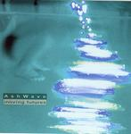

| Artist: | AshWave |
| Title: | Moving Futures |
| Label: | Dreaming DR 8424.AR |
| Length(s): | 48 minutes |
| Year(s) of release: | 2004 |
| Month of review: | [04/2004] |
| 1) | Time | 3.52 |
| 2) | Need | 5.06 |
| 3) | Tiger | 4.08 |
| 4) | Water | 3.50 |
| 5) | Attraction | 4.21 |
| 6) | Road | 3.07 |
| 7) | Revolution | 6.01 |
| 8) | Palestine | 3.50 |
| 9) | Mile | 4.12 |
| 10) | Holes | 5.35 |
| 11) | Tiburon | 3.55 |
We continue in modern fashion with Tiger, the music has a tendency to be a combination of electronic and psychedelic, similar to Porcupine Tree. Not as potent as the previous track, the music stays rather laid back here. Water continues in this vein, but more dreamily. This song shows why this album finally came out on Dreaming instead of Musea. The lyrics have something of Jon Anderson, the music is a New Agey kind of Canterbury, the warm vibes, but also with modern rhythms.
Attraction makes a transition to poprock, with vocals and a furious guitar solo, followed by plenty of wah-wah like solo material. The song is stretched out, with a psychedelic feel, although the vocal part are pure poprock. Road is a typical Dreaming track: melodic, but purely electronic. A Chinese feel in here. It strikes me that at times the music is rather crackly. A lack in the production or recording, or is it my headphones?
Revolution does not open as one would expect it to open. Moody electronics intertwinig in complex fashion, but there is also something fragmentary about it. There is something of Peter Gabriel in here, but the guitar is more in the line of an easy side of King Crimson with a blues feeling. A bit meandering this one. Later the vocals set in, these are again the pop vocals of earlier on. They do fit in well with the atmospheric pop music that we acually have here (on the whole).
Palestine is another modern exercition with a nice groove on the percussion side. Relaxed, but also quite strange. I guess Porcupine Tree still comes closest, although there has no been no plain copying and admittedly, the rhythms are a bit more modern, there seems to be a bit more programming, and more electronics. Mile continues in the same vein, but more relaxed. I also like the melody quite a bit more. When done in this way, Pineapple Thief and Porcupine Tree are close: somber psycheclectic vocal tracks, yet very melodic. Very good too. Holes is the penultimate one, bleepy and percussion oriented. The closer is Tiburon, a magnificent emotional piece about April 11th 2002 in Caracas when president Hugo Chavez had his men shooting over a protest march of thousands of people. 76 died and 600 hundred were wounded. This is an imposing lament, the emotional portent of which is hard to catch in words; suffice to say it moved me to tears. There is something of Morricone in here (Once Upon A Time In The West).